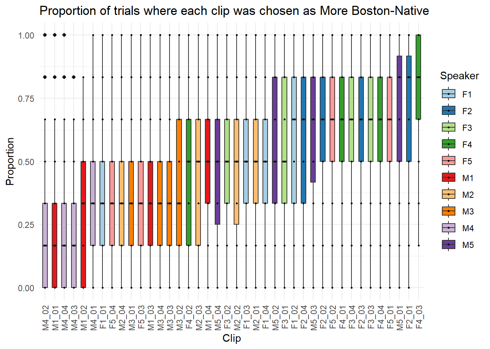
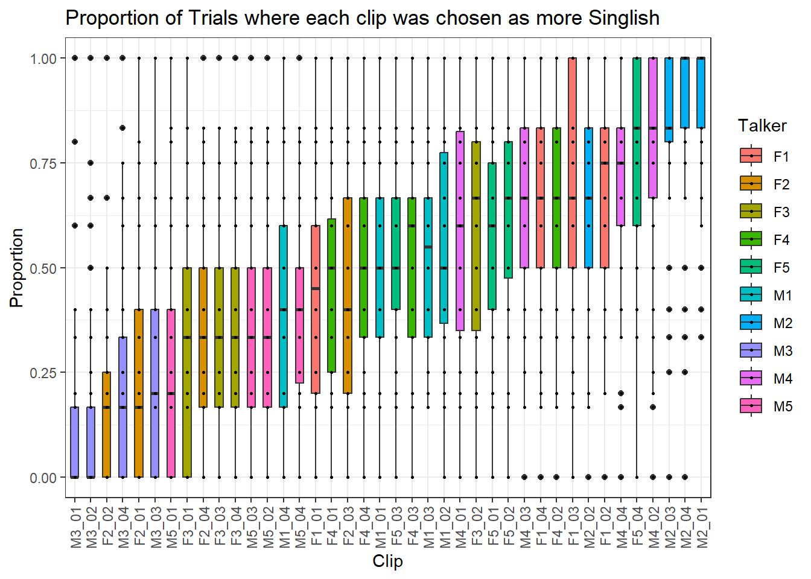
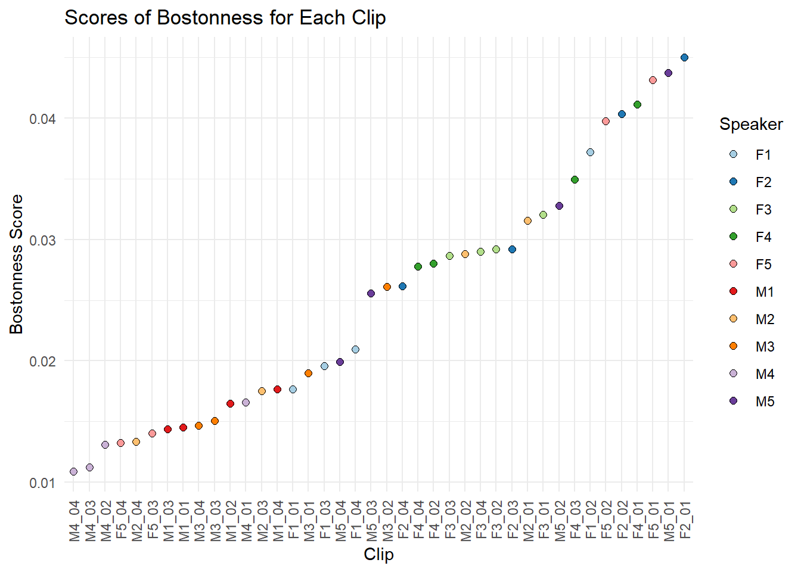
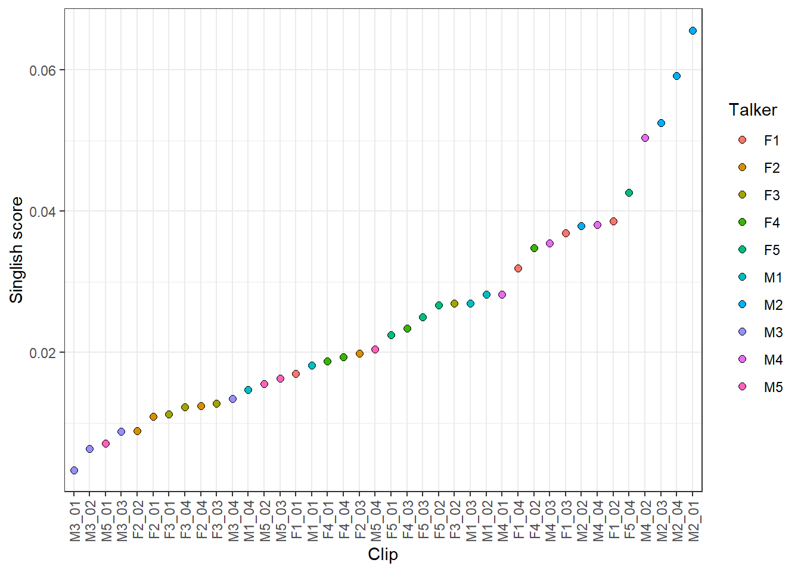

#SINGLISH DATA FOR COMPARISON
# load packages
library(tidyverse)
library(lmerTest)
library(lme4)
library(car)
library(ggsignif)
library(mgcv)
library(ggplot2)
library(sjPlot)
theme_set(theme_bw())
# load data
df.singlish <- read.csv("C:/Users/jww/Documents/Github/ling245b_replication/data/data_ones.csv") # full data frame
df.singlish$id <- as.factor(df.singlish$id)
df.singlish$speaker <- as.factor(df.singlish$speaker)
df.singlish$clip <- as.factor(df.singlish$clip)
# find which IDs have been dropped
ids_before_drop = df.singlish$id
# remove trials with no responses
df.singlish_noNA = df.singlish %>%
drop_na(singlish)
ids_after_drop = df.singlish_noNA$id # IDs after removing trials with no responses
# IDs that have been dropped = 396, 239, 247, 643, 470, 582, 556, 626, 78
ids_completely_dropped <- setdiff(ids_before_drop, ids_after_drop)
# reset the data frame
df.singlish = df.singlish_noNA
# remove NAs
df.singlish <- df.singlish %>%
filter(!is.infinite(logRT)) %>%
filter(!is.na(singlish))Replication of Pitch variability cues perceptions of Singlish: A perceptually-guided approach to sociophonetic variation by Tan and Sumner (2024, UPenn Working Papers in Linguistic)
Introduction
Integrating an understanding of the social world into any linguistic investigation is essential for addressing the broader goal of understanding how language functions. While sociolinguists have long emphasized the importance of considering the socioindexical information embedded in language, much of this work has focused on variation in production patterns. The study of the perceptual aspects of sociolinguistic phenomena has only recently undergone substantial development. Furthermore, most sociolinguistic perception studies have focused on speech perception, often implicitly prioritizing single variables as the primary object of analysis.
Although this framework has advanced our understanding of sociolinguistic behavior, Tan and Sumner (2024) further develop this line of investigation by proposing a method to uncover multiple possible sociolinguistic variables across a diverse set of speech samples. In their study, listeners were asked to complete pairwise comparisons of speech clips from a variety of speakers, selecting which clip sounded more like “Singlish.” Their findings suggest that multiple features within utterances correlate with perceptions of Singlish. By identifying features that reliably correlate with higher Singlish ratings, this investigation moves beyond a narrow focus on individual variables. While this approach sacrifices some experimental control, it marks a significant step toward understanding sociolinguistic perception as a process that unfolds over longer, more complex, and diverse speech utterances.
The goal of this replication is to reconfirm listeners’ ability to draw on features found in diverse speech samples to make inferences about a specific social category. By modifying the social category, speaker set, and relevant sociolinguistic variables, this replication reinforces not only the viability of such methodologies for investigating social perception in language, but also the pluralistic feature-based nature of sociolinguistic processing.
Methods
The methodology for this replication follows the structure of Tan and Sumner’s original study. In each trial (20 trials per block across 6 blocks), participants will hear two audio clips of spoken English presented back-to-back, separated by 500 milliseconds of silence. After each pair, participants will choose which clip sounded more like a speaker from a specific social category by pressing “L” or “S” to indicate the first or second clip. Each trial will be followed by a 2-second pause.
Each of the 40 total stimuli will be played once per block, with randomized ordering. After completing the trials, participants will fill out a language background, demographic, and social attitude survey.
This replication differs from the original in terms of both the speech clips and the target social category. The speakers in this study will be Cantonese L1 English speakers living in the Boston area. Listeners will be asked to judge which clip sounds more like someone born in Boston. Participants will be recruited from Massachusetts to ensure familiarity with the local accent. While the original study treated the speeded choice task as exploratory, this replication draws on extensive literature on both Cantonese contact effects in English and features of the Boston accent. The focus is not only on identifying features that cue Boston origin, but also on understanding how the presence—and co-occurrence—of contact and dialectal features influence the categorization of speakers as native Bostonians. ### Power Analysis
Using Tan & Sumner’s original analysis, we calculated the effect size to be ~0.0315. Having used logistic regression model with 4 predictors, to achieve 80%, 90% and 95% power, we would need a sample of 379, 489, and 589 respectively. In terms of feasibility, these samples seem quite large, so the smallest sample size may be the most possible.
Planned Sample
To achieve sample with sufficient power, we plan to collect 379 participants. All participants will also be born within the US and current residents of Massachusetts. Collecting this size of a sample may prove difficult, so if a full sample is not collected, an additional post-hoc analysis will be completed to assess the statistical claims that are possible.
Materials
Stimuli for this experiment comes from interviews conducted by the first author for a separate investigation. The focus of this other study was to look at vocalic variation among Cantonese speaking immigrants to the Greater Boston area. The interviews were then semi-randomly sampled for phrases and sentences where 10 talkers (5 female and 5 male) were chosen and 4 clips for each talker.
All clips were between 0.8-4 seconds, and each talker had 2 shorter clips that were just phrases and 2 longer clips that were full sentences. Clips were also selected to be socially ambiguous in regards to geographic origin (e.g. clips that mentioned of specific landmarks or locations were not included). All clips were also normalized for loudness in Audacity.
Procedure
The general procedure of this task follows a speeded pairwise comparison task where participants would hear two clips played one after the other and then be asked to determine “Which clip sounds more like someone who was born in Boston?” More specifically, “In each experimental trial, participants heard two audio clips with a 500 ms silence between them and answered the question…by pressing either ‘S’ for the first clip or ‘L’ for the second clip. After the second clip ended, participants had to respond in two seconds before the experiment automatically moved to the next trial.” Participants were also shown a green highlight of the box they chose to confirm that they had chosen in the correct window of time. There was a 1.5 s gap between trials. In total, there were 6 blocks of 20 trials, totaling to 120 trials for each participants. Additionally, participants could also have gotten two possible conditions, one where they hear 60 pairs of phrases first or 60 sentences (and vice versa). To ensure that the same stimulus would not be heard many times in a row, each of the stimulus were played within their section of blocks. After the experimental trials, participants completed the post-task questionnaire.
The post-task questionnaire consisted of a demographic questions and language use. Additionally, an adapted language attitude survey asking about participants’ opinions about the Boston accent was also included. Participants were also asked to list three descriptions of the Boston accent and reflect on their perceptions of their community. Finally, they were asked about the their current mood. Cumulatively, the aim of these latter questions is to function as a window into people’s ideological positions regarding the accent and their surroundings.
Analysis Plan
The total number of participants that will be analyzed will be all of those who finished the task and did not fail the attention check by not giving a response for 5 consecutive trials.
The analysis will consist of an investigation of the response choices and then preliminary acoustic analysis. The first step in the analysis of the response choice is calculating the predicted probability of each being chosen as sounding more like a “Boston-native.” Additionally, a Chi-square test will be applied to the data to determine if the proportion of sounding like a Boston-native for each clip is the same.
Finally, we will use logistic regression for an feature based analysis of the possible acoustic cues towards sounding more Bostonian-like.
Differences from Original Study
This replication differs in a number of key ways regarding stimuli, study population, and acoustic analysis. Rather than using Singlish as the social category of interest and probing the perceptions of Singaporeans, we are applying a similar method to the perception of the local variety of speech within the Boston area. Additionally, the talkers that we have gotten stimuli from are all immigrants to the Boston area, and so they may be less aligned in their speech production with a prototypical Boston accent as compared to the Singlish speakers of the original study. Additionally, the vocalic variables while derived from the same process of meta-linguistic commentary from participants will also be different.
Regardless of these differences, the underlying logic of the studies are the same in that both studies are probing the perception of a single social category from a diverse set of speech samples, allowing us to approach similar theoretical questions from divergent empirical starting points.
Methods Addendum (Post Data Collection)
Actual Sample
The final sample size was 237 participants where 6 were excluded due to the afformentioned data exclusion criterion.
Differences from pre-data collection methods plan
The final sample ended up being smaller than planned for the desired 80% power due to the smaller number of eligible partiicpants from Massachussets and time constraints. The limitations of this will be discussed in the final sections.
Results
Data preparation
Data preparation following the analysis plan.
# load more data!
# for the proportion data, not binary
df.singlish_proportion <- read.csv("C:/Users/jww/Documents/Github/ling245b_replication/data/data_proportion.csv")
df.singlish_proportion$id <- as.factor(df.singlish_proportion$id)
df.singlish_proportion$speaker <- as.factor(df.singlish_proportion$speaker)
df.singlish_proportion$clip <- as.factor(df.singlish_proportion$clip)
## remove IDs
df.singlish_proportion = df.singlish_proportion %>%
filter(!id %in% c(396, 239, 247, 643, 470, 582, 556, 626, 78))
# only data from clips which were chosen as the More Singlish clip
df.singlish_ones <- read.csv("C:/Users/jww/Documents/Github/ling245b_replication/data/data_ones.csv")
df.singlish_ones$id <- as.factor(df.singlish_ones$id)
df.singlish_ones$speaker <- as.factor(df.singlish_ones$speaker)
df.singlish_ones$clip <- as.factor(df.singlish_ones$clip)
df.singlish_ones <- df.singlish_ones %>%
filter(!is.infinite(logRT)) %>%
filter(!is.na(singlish))
# for the pair in trial comparisons
df.singlish_pairs <- read.csv("C:/Users/jww/Documents/Github/ling245b_replication/data/data_pairs.csv")
df.singlish_pairs$id <- as.factor(df.singlish_pairs$id)
df.singlish_pairs$speaker <- as.factor(df.singlish_pairs$speaker)
df.singlish_pairs$clip <- as.factor(df.singlish_pairs$clip)
df.singlish_pairs <- df.singlish_pairs %>%
filter(!is.infinite(logRT)) %>%
filter(!is.na(singlish))Confirmatory analysis
Response Choice analysis:
#SINGLISH
# raw proportion data
singlish_proportion_plot <- df.singlish_proportion %>%
ggplot(aes(x=reorder(clip,probability,na.rm=TRUE), y=probability, fill=speaker)) +
geom_boxplot(width=0.5) +
geom_point(size=0.5) +
labs(y="Proportion", x="Clip", fill="Talker", title = "Proportion of Trials where each clip was chosen as more Singlish") +
theme(axis.text.x = element_text(angle=90, vjust=0.5, hjust=1))#creating the proportion of chosen df for replication
df.boston_proportion <- filtered_data %>% filter(!participant%in% c("af6xusexwc","y0sscwkeon","ghhgz3uuq6","xjnonnpvr7","a38yky920a","foe12e198r"))%>%
group_by(clip, speaker, speaker_gender, participant ) %>%
summarise(
n_trials = n(),
n_chosen = sum(was_selected, na.rm = TRUE),
probability = n_chosen / n_trials,
duration = first(duration),
rt = mean(rt),
.groups = 'drop'
) %>%
filter(n_trials > 0)
# Create the response choice proportion plot
response_choice_plot <- df.boston_proportion %>% filter(!speaker =="practice_speaker") %>%
ggplot(aes(x = reorder(clip, probability, na.rm = TRUE),
y = probability,
fill = speaker)) +
geom_boxplot(width = 0.5) +
geom_point(size = 0.5) +
scale_fill_brewer(palette = "Paired") +
labs(y = "Proportion",
x = "Clip",
fill = "Speaker",
title = "Proportion of trials where each clip was chosen as More Boston-Native") +
theme_minimal() +
theme(axis.text.x = element_text(angle = 90, vjust = 0.5, hjust = 1))
response_choice_plot
singlish_proportion_plot
In terms of a qualitative description of the results, we see that the distributions of responses are relatively similar between studies. They both have clips that were frequently chosen and those that were not. Interestingly, there seem to be more strongly-cueing Singlish clips compared to the Boston clips. For the Singlish experiment the last three clips seem to consistently strongly cue Singlish, while for the Boston clips, the responses are much more dispersed. This intuitively matches with the afformentioned difference in the study populations where being immigrants to the area, the Boston study speakers may exhibit more atypical Boston variety speech.
#predicted probability generated with separate python script from Tan and Sumner, see analysis/markov_rank.py
rankings_df_with_speaker<- read.csv("C:/Users/jww/Documents/Github/ling245b_replication/data/markov_df_with_speaker.csv")
ggplot(rankings_df_with_speaker,
aes(x = reorder(clip_id, score), y = score)) +
geom_point(aes(fill = Speaker.ID), shape = 21, size = 2, color = "black") +
scale_fill_brewer(palette = "Paired") +
labs(
y = "Bostonness Score",
x = "Clip",
fill = "Speaker", # changed from 'color'
title = "Scores of Bostonness for Each Clip"
) +
theme_minimal() +
theme(
axis.text.x = element_text(angle = 90, vjust = 0.5, hjust = 1)
)
df.singlish_proportion %>%
ggplot(aes(x=reorder(clip, clip_score), y=clip_score)) +
geom_line(color="black") +
geom_point(aes(fill=speaker), shape=21, size=2) +
labs(y="Singlish score", x="Clip", fill="Talker") +
theme(axis.text.x = element_text(angle=90, vjust=0.5, hjust=1))
Similar to the previous discussion, we see that the range is wider for the Singlish clips where there are a handful that cue quite strongly (having a +0.04 score). Interestingly, the Boston clips also have a similar number of clips that score above 0.04 but do not score as high.
Chi-squared Tests Singlish
tab_singlish <- table(df.singlish$clip, df.singlish$singlish)
chisq.test(tab_singlish, correct = FALSE)
Chi-squared test for given probabilities
data: tab_singlish
X-squared = 2464.7, df = 39, p-value < 2.2e-16Boston
tab <- table(filtered_data$clip, filtered_data$was_selected) # create contingency table
chisq.test(tab, correct=FALSE) # chi-square test
Pearson's Chi-squared test
data: tab
X-squared = 5760.4, df = 45, p-value < 2.2e-16The Chi-squared tests for both clip groups come out as significant, demonstrating a significant difference between each clip.
Acoustic Analysis:
For the acoustic analysis, we followed Ta and Sumner’s procedure of deriving relevant acoustic cues from meta-linguistic commentary. However, we chose r-lessness rather than suprasegmental features.
m.singlish = glmer(singlish ~ csyllablespersec + cst_pitchpvi_new + cstvar_new + cnpviV_nophrasefinal + csyllablespersec:cst_pitchpvi_new + cstvar_new:cst_pitchpvi_new + cnpviV_nophrasefinal:cst_pitchpvi_new + (1|clip) + (1|speaker), data=df.singlish_pairs, family=binomial())
summary(m.singlish)Generalized linear mixed model fit by maximum likelihood (Laplace
Approximation) [glmerMod]
Family: binomial ( logit )
Formula: singlish ~ csyllablespersec + cst_pitchpvi_new + cstvar_new +
cnpviV_nophrasefinal + csyllablespersec:cst_pitchpvi_new +
cstvar_new:cst_pitchpvi_new + cnpviV_nophrasefinal:cst_pitchpvi_new +
(1 | clip) + (1 | speaker)
Data: df.singlish_pairs
AIC BIC logLik deviance df.resid
33607.8 33690.2 -16793.9 33587.8 27942
Scaled residuals:
Min 1Q Median 3Q Max
-3.4161 -0.8010 -0.0237 0.8392 2.9398
Random effects:
Groups Name Variance Std.Dev.
clip (Intercept) 0.1800 0.4242
speaker (Intercept) 0.9126 0.9553
Number of obs: 27952, groups: clip, 40; speaker, 10
Fixed effects:
Estimate Std. Error z value Pr(>|z|)
(Intercept) 0.0317780 0.3142069 0.101 0.9194
csyllablespersec 0.2142249 0.1056835 2.027 0.0427 *
cst_pitchpvi_new 0.1904614 0.0912988 2.086 0.0370 *
cstvar_new -0.1950229 0.0859934 -2.268 0.0233 *
cnpviV_nophrasefinal 0.0008623 0.0066609 0.129 0.8970
csyllablespersec:cst_pitchpvi_new 0.0702712 0.0865507 0.812 0.4168
cst_pitchpvi_new:cstvar_new -0.0027774 0.0421548 -0.066 0.9475
cst_pitchpvi_new:cnpviV_nophrasefinal -0.0028096 0.0048504 -0.579 0.5624
---
Signif. codes: 0 '***' 0.001 '**' 0.01 '*' 0.05 '.' 0.1 ' ' 1
Correlation of Fixed Effects:
(Intr) csyllb cst_p_ cstvr_ cnpvV_ csy:__ cs__:_
csyllblsprs 0.050
cst_ptchpv_ 0.081 0.630
cstvar_new -0.031 -0.509 -0.639
cnpvV_nphrs 0.025 -0.028 -0.027 0.241
csyllbls:__ 0.086 0.360 0.533 -0.407 0.126
cst_ptch_:_ -0.112 -0.044 -0.089 -0.190 -0.173 0.164
cst_ptc_:V_ 0.018 -0.012 0.051 -0.103 -0.250 -0.249 0.082rhoticity_perception <- read.csv("C:/Users/jww/Documents/GitHub/ling245b_replication/data/rless_anotation.csv")
filtered.rhoticity <- merge(filtered_data,rhoticity_perception, by = "clip")
filtered.rhoticity <- filtered.rhoticity %>%
mutate(rless = rless_count > 0)
glmer(was_selected ~ rless + (1|clip) + (1|speaker), data = filtered.rhoticity %>% filter(post_vocal == TRUE), family=binomial) %>% summary()Generalized linear mixed model fit by maximum likelihood (Laplace
Approximation) [glmerMod]
Family: binomial ( logit )
Formula: was_selected ~ rless + (1 | clip) + (1 | speaker)
Data: filtered.rhoticity %>% filter(post_vocal == TRUE)
AIC BIC logLik deviance df.resid
40986.3 41019.7 -20489.2 40978.3 31280
Scaled residuals:
Min 1Q Median 3Q Max
-1.8462 -0.9095 0.5416 0.9246 1.6107
Random effects:
Groups Name Variance Std.Dev.
clip (Intercept) 0.1819 0.4265
speaker (Intercept) 0.1538 0.3922
Number of obs: 31284, groups: clip, 22; speaker, 9
Fixed effects:
Estimate Std. Error z value Pr(>|z|)
(Intercept) -0.07347 0.22364 -0.329 0.743
rlessTRUE 0.27182 0.24478 1.110 0.267
Correlation of Fixed Effects:
(Intr)
rlessTRUE -0.691Finally, the Singlish experiment found articulation rate, pitch PVI, and pitch variance are significant predictors of a More Singlish response, while the investigated acoustic variable of r-lessness did not come out as significant.
Discussion
Summary of Replication Attempt
Our study partially replicated the results of Tan and Sumner (2024) in regards to the general qualitative trends of clip choice and the statistical results of the chi-square test. However, the similar acoustic analysis did not replicate. Regarding the chi-square test, a followup power analysis was also completed where the required sample size for 80% power would be 186 participants (a number that this study has reached), so we can further confirm that there is some significant difference between the clips. The lack of replication for the acoustic measures is not completely surprising as well since we investigated difference acoustic features despite the process of our choosing of them being similar.
Commentary
Importantly, the required sample size for 80% power for the acoustic analysis was not met by this replication, but the resulting lack of significance for r-lessness, a classic Boston dialect feature, may also not be surprising given the study population. Cantonese immigrants generally are less likely to pronounce their r’s (due to a variety of reasons including education experience in British style schooling or the lack of rhotics in Cantonese), so while speaker may be non-rhotic they may also possess other co-occurring features within those clips that make them sound not like a Bostonian. Nonetheless, we also see that participants were organizing speakers along some dimension and not choosing randomly. These points highlight the need to further disentangle these nuances to better understand the complex perceptual processes that shape our interpretations. Generally, our replication also points to the importance of applying similar methodologies to different study populations, not to necessarily challenge the claims of the original study but expand the theoretical implications of their findings.